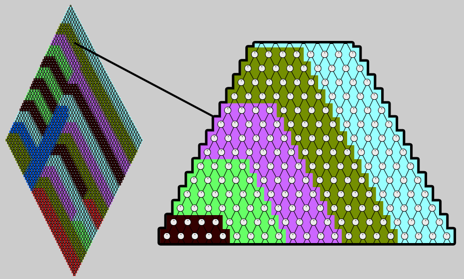

Pulsecount engine
Motivation
The Pulsecount engine is intended as a purely parallel engine, implemented around tasks and non-blocking synchronization.
Instead of synchronizing the control flow based on topology level like parallel Toposort, nodes should only have to wait for their respective dependencies.
Concept
A turn divided into two phases.
- The reachable portion of the graph is marked.
During thise phase, an atomic counter on each node is initialized to the number of reachable predecessors.
- The actual update propagation starts. Each node notifies its successors after it has been processed; this decrements their counters.
If the counter value of a node reaches zero, i.e. all its predecessors are done, it is ready to be processed as well.
Algorithm
The following pseudo-code describes the basic algorithm.
Phase 1:
Foreach changed input node v:
initCounters(v)
Function initCounters(node):
Foreach successor of node:
Increment counter of successor
If successor is not marked:
Mark successor
initCounters(successor)
Phase 2:
Foreach changed input node v:
Spawn task:
notifySuccessors(v, true)
Await tasks
Function notifySuccessors(node, changed):
Foreach successor of node:
If changed:
Mark successor for update
Decrement counter of successor
If counter is greater zero:
Continue with next successor
Spawn task:
If successor is marked for update:
successor.Update()
result = {has successor been changed?}
notifySuccessors(successor, result)
Dynamic agglomeration
Spawning a single task for every node update is generally wasteful, especially when considering lightweight nodes.
For this reason, each task keeps a work queue that can hold several lightweight nodes.
When the queue exceeds a certain size, it is split to delegate half of the work to a new task.
The following pseudo-code describes this:
Q = Initial nodes scheduled for updating
While Q is not empty
Take node from Q
If node is marked for update
node.Update()
Foreach successor of node:
If node was changed:
Mark successor for update
Decrement counter of successor
If counter is greater zero:
Continue with next successor
If successor is heavyweight:
Spawn new dedicated task with Q = successor
Else:
add successor to Q
If Q is full:
Split Q and delegate half to new task
The data structure used for the queue is a small fixed-size circular buffer, allocated with the task itself.
Each task keeps track of the number of times it has split its buffer.
Initially, it pushes nodes to the end of the queue and pops them from the front (FIFO), resulting in a BFS traversal.
This is to fill the queue as quickly as possible and split close to the graph root.
After a certain number of splits, the task will switch to FILO/DFS for better throughput (splits become less likely, better locality).
The counter initialization phase of the algorithm is parallelized with the same technique.
As done before with parallel toposort, the following image shows the agglomeration on a live example:

Each node is leightweight and the queue size is 8.
Issues
While the Pulsecount algorithm tries to account for lightweight nodes, using it to parallelize graphs that mostly consist of the latter is usually not worth it.
To back this up with some data, consider a reactive matrix with 10K signals.
A[i][j] is the single input node and A[i][j] = A[i-1][j] + A[i][j-1] (out-of-bounds cells default to zero).
The time required for 10K updates of the whole graph is 1.6s for sequential toposort, but for Pulsecount it’s 2.5s.
Even if Pulsecount would slightly outperform the single-threaded algorithm, the extra CPU time induced by overhead is disproportionate.
Conclusions
The Pulsecount engine uses an algorithm specifically designed for parallel updating.
Synchronization is mostly based on atomic counters and results in the least overhead among parallel strategies.
Hence, this engine should be selected when parallelization is known to be worthwile.
 Hold
Hold WeightHint
WeightHint Continuation
Continuation REACTIVE_DOMAIN
REACTIVE_DOMAIN